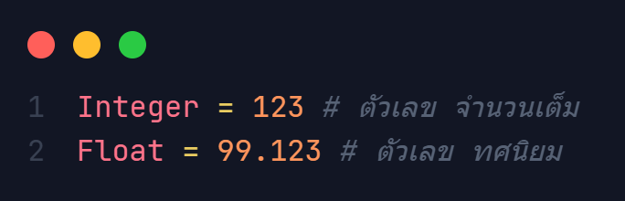
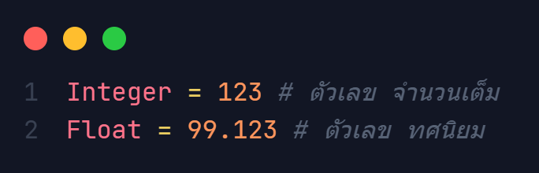

Numbers
ประเภทของตัวเลขใน Python
Python มีประเภทตัวเลขอยู่ทั้งหมด 3 ชนิด
- int
- float
- complex
ในหัวข้อนี้จะขอนำเสนอประเภทตัวเลขที่ใช้ตัวไปใน Python เพียง 2 ตัวเท่่านั้น (int, float)
Python มีประเภทตัวเลขอยู่ทั้งหมด 3 ชนิด
ในหัวข้อนี้จะขอนำเสนอประเภทตัวเลขที่ใช้ตัวไปใน Python เพียง 2 ตัวเท่่านั้น (int, float)
